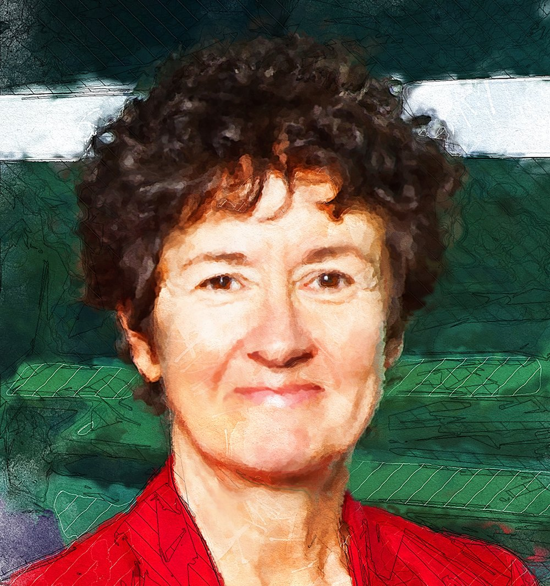
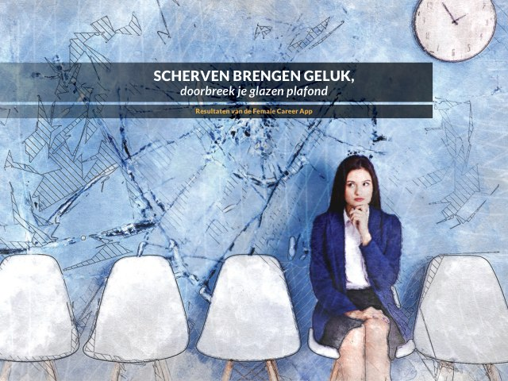
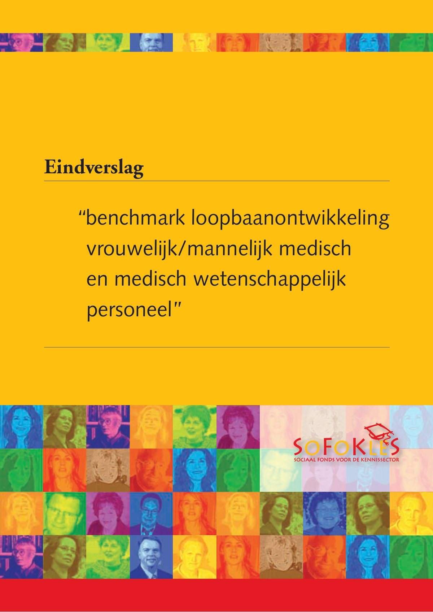
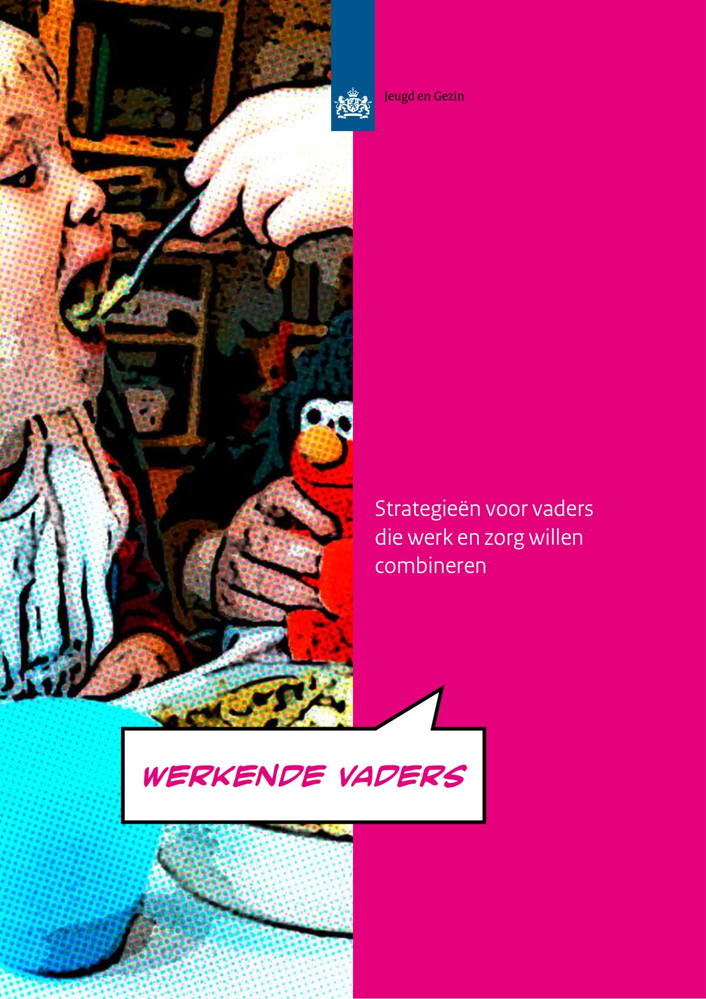
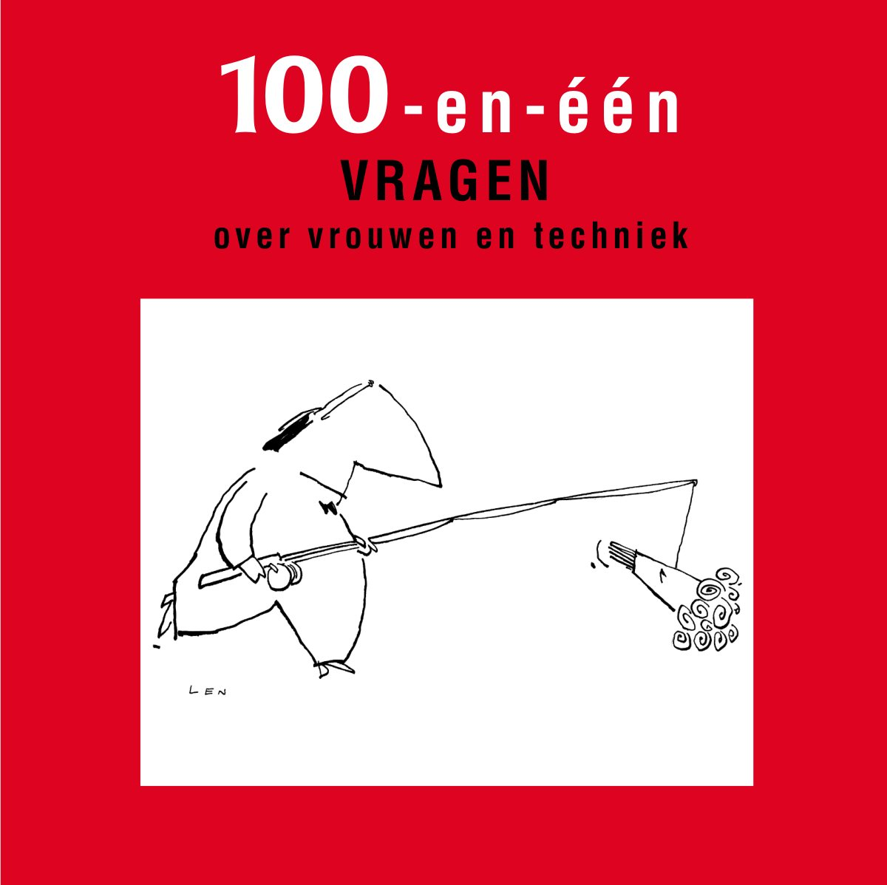
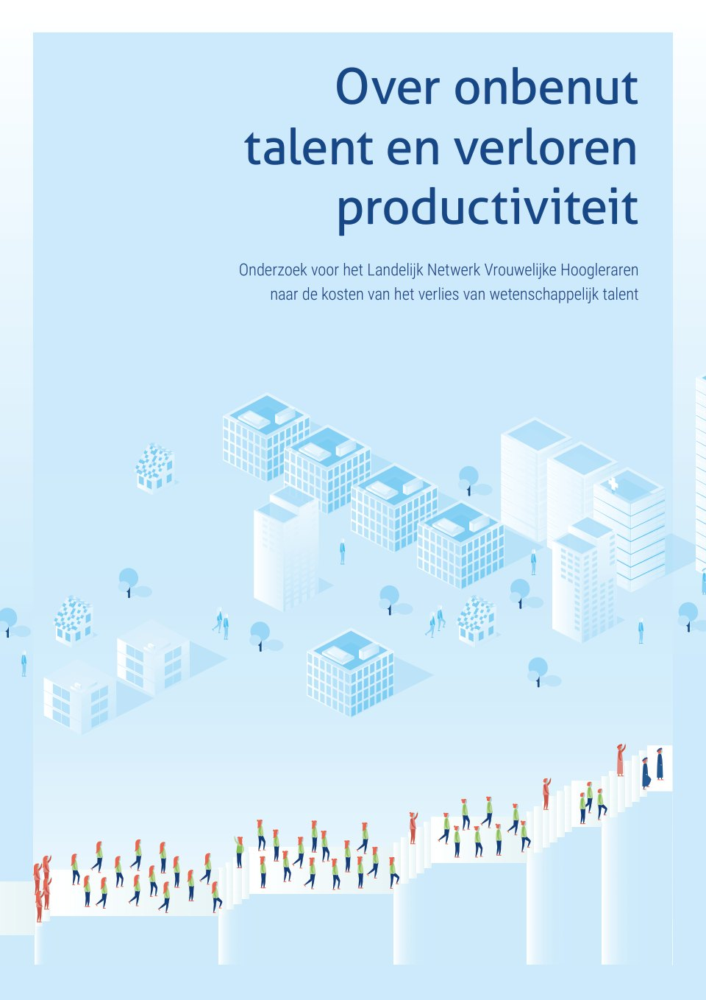
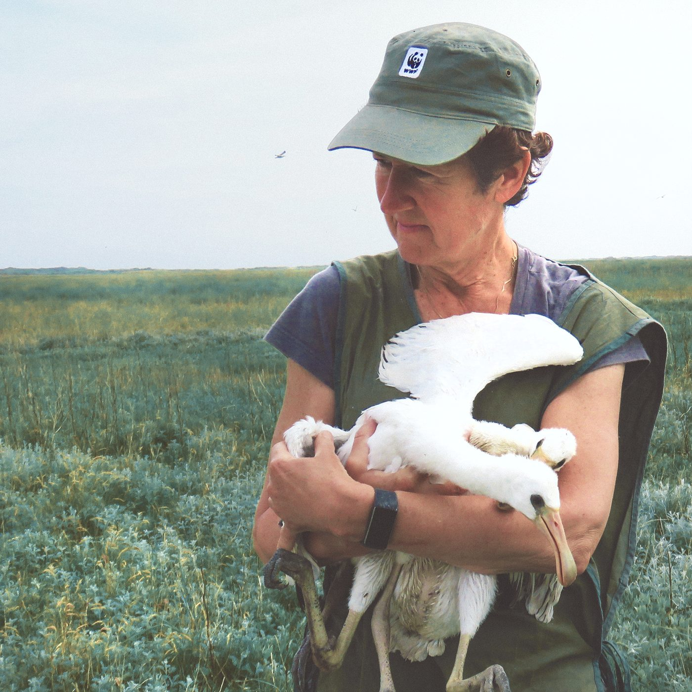

It’s the job that’s never started as takes longest to finish.
J.R.R. Tolkien
laatste project
Monitor Talent naar de Top 2025
Ik laat hier een kort fragment zien; de volledige interactieve publicatie staat op haar eigen plek.
Monitorfragment wordt geladen...
Verder lezen
monitortalent.nlMijn werk
Vraagstukken van sociale gelijkheid en rechtvaardigheid vormen een rode draad in mijn werk. Voorbeelden van publicaties vindt u hier:

Scherven Brengen Geluk
Benchmark loopbaanontwikkeling vrouwelijk-mannelijk medisch en medisch wetenschappelijk personeel
Werkende vaders, strategieën voor vaders die werk en zorg willen combineren
101 vragen over vrouwen en techniek
Over onbenut talent en verloren productiviteit, Monitor LNVH 2017Over Wilma
Begon haar loopbaan als wetenschappelijk onderzoeker en hoofd Wetenschapswinkel bij de Erasmus universiteit, om zich vervolgens te specialiseren in marketing en communicatie. Richtte op Curaçao marketingbureau Insight op en stapte in 1993 over naar VanDoorneHuiskes als partner. Vraagstukken van sociale ongelijkheid, gender en diversiteit houden haar al een leven lang bezig. Zij schreef veel publicaties hierover en participeerde in diverse internationale commissies en projecten.
Bestuurlijk actief in sport, onderwijs en hulpverlening, en als vrijwilliger op diverse fronten. Ze werkt met heel veel plezier mee aan natuur- en milieuactiviteiten.

Vragen?
Hier kunt u mij bereiken